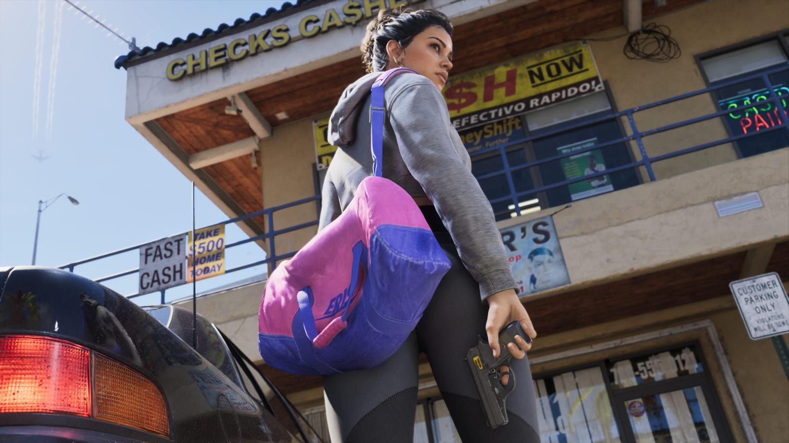

Как купить GTA 6 в России
Обновлено: 24.09.2026

Коротко
- Официально в России PlayStation Store и Microsoft Store игры не продают с 2022 года.
- Основной способ — аккаунт другого региона и карты пополнения этого региона.
- Коробочное издание — это код, привязанный к региону.
- Проверяйте продавцов: правила магазинов меняются.
Почему нельзя купить напрямую
В 2022 году Sony и Microsoft приостановили продажи в России. Поэтому в российском регионе PlayStation Store и Microsoft Store купить GTA 6 нельзя, а российские карты для оплаты в этих магазинах не принимаются.
Способы покупки
- Аккаунт другого региона. Создаётся отдельный аккаунт PSN или Microsoft другой страны, игра покупается в магазине этого региона.
- Карты пополнения. Кошелёк такого аккаунта пополняется подарочными картами того же региона — их продают цифровые магазины и маркетплейсы.
- Посредники. Сервисы, которые покупают игру или пополняют баланс за вас.
- Коробочное издание. Внутри код для загрузки — он привязан к региону, в котором издание выпущено.
Какой регион выбрать
Российские игровые издания чаще всего называют Турцию, Индию, Польшу, Великобританию и США. Цена игры в разных регионах разная — перед покупкой сравните стоимость издания в выбранном магазине.
Важные нюансы
- Регион карты пополнения должен совпадать с регионом аккаунта.
- Регион аккаунта PSN после создания сменить нельзя — выбирайте сразу.
- Покупайте карты и услуги только у проверенных продавцов с отзывами.
- Правила магазинов могут измениться — перед покупкой проверьте актуальную информацию.
Какие издания бывают и сколько они стоят — в статье Издания и цены GTA 6: Standard и Ultimate. Будет ли в игре русский язык — Русский язык в GTA 6: есть ли озвучка.
Источники: Rockstar Games; DTF, vc.ru, Хабр — материалы о покупке игр из России.